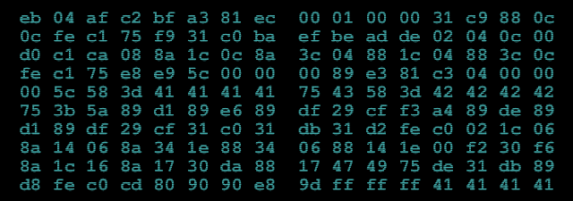

Photo de "machine language" en format "hex"(gauche) et en "binaire"(droite)
Photo de "machine language" en format "hex"(gauche) et en "binaire"(droite)
Sites Internet: Du Passé au Futur en Passant par la Création
L'Exemple de la Création de Mon Site
Partie 1 : Histoire
tester manuellement particularités html1 ou coder ac html 5 nouvelles fonctionnalités ouvrir 2fenetre ou comparer 2 commande une nouvelle ancienne ou comment faire la meme chose de deux maniere deifferentes
Invention de la programmation
Avant il n'existait pas de langage permettant de donner des instruction à une machine autre que ce qu'on appelle aujourd'hui le "langage assembleur" : c'est le langage qui se rapproche le plus possible du langage de la machine tel que le binaire ou l'hexadécimal (hex). Mais pour le début de cet introduction une approximation sera faite entre ces deux "langages de bas niveau".

Photo de "machine language" en format "hex"(gauche) et en "binaire"(droite)
Photo de "machine language" en format "hex"(gauche) et en "binaire"(droite)
Programmer en langage machine était très dur, provoquait beaucoup d'erreurs et changaient selon la machine. De plus, comme dit précédemment, c'était le seul moyen de donner une instruction, car à l'époque (années 40) il n'existait que de grosses machine, à des années lumières de ce que l'on a aujourd'hui et elles étaient utilisées pour faire de la recherche et des calculs notamment pour découvrir de nouvelles formules mathénmatiques.
Donc le tout premier langage de programmation de "haut niveau", "Plankalkül" à été conçu entre 1942 et 1945 mais est resté inconnu et ignoré dû à la seconde Guerre Mondiale. Il est qualifié comme langage de "haut niveau", cepandant comme d'autres langages plus populaires des années 40, il devait avoir une extension en plus, un compilateur, pour le traduire en "langage machine" à chaque utilisation ce qui rendait le procédé encore plus long que d'écrire la même chose directement à la main.
Un autre exemple de langage de cette catégorie est "Short Code" qui permettaient de coder des équations mathématiques de manière "lisible".
Compiler est un procédé assez intuitif et simple dans les faits: traduire un langage de haut niveau en langage de bas niveau.
Mais c'est en réalité plus compliqué que ça. Il est dit précedemment que que le compilateur traduit en langage machine, mais ce n'est pas totalement vrai. En effet il traduit en langage assembleur et une toute dernière étape est nécessaire pour le transformer en langage machine à l'aide d'un assembleur. L'information est alors directement traité par le système d'exploitation.

Le langage assembleur, comme ont peut le voir sur la photo, utilise un ensemble de moyen mnémotechnique (géréralement un ensemble de 3 lettres, presque aussi peu compréhensible que le langage machine) pour exprimer une commande, en hexadécimal.
Aujourd'hui les compilateurs sont directement inclus dans les logiciels de codage et l'assembleur fait partie intégrante du processus de traitement des données de l'ordinateur. Contrairement à ce que l'on peut penser, le langage assembleur est toujours utilisé, pour la console de commande notamment qui était très utilisé sur l'ancêtre de Windows, MS-DOS.
Début de la programmation Web & Types d'internet
base de la programmation sur ordinateur commence avec MS-DOS, Microsoft Disk Operating System, sur le fameux IBM PC en 1981. Comme dit précedemment, l'interface "humain-machine" sur MS-DOS est la console de commande. MS-DOS a été programmé avec du langage assmebleur bien qu'il ai été developpé dans les années 70 et c'est d'ailleurs aussi un type de langage assembleur que l'on doit utliser pour faire fonctionner cette console.
On s'en sert principalement comme d'un ordinateur de nos jours dit "normal", on change de fichier (directory) à un autre, on crée des fichier, on en modifie etc... Par exemple la commande "cd" nous permet de changer de fichier (change directory) "ls" nous permet de lister les fichier présent à l'endroit où l'on est etc... )
Mais avant ça y avait Qd même Prototype de PC dans certaines universités avant imb pc e.g. Titan a Cambridg--> Création CPL (ms dos etc) créé mais beaucoup trop compliqué, Là " père programmation" Dennis Ritchie et Mr.Richards BCPL qui est beaucoup plus simple (avec b pour basic mais intéressant nom de base était b pour Bootstrap => Bootstrap qui est toujours Aujourd'hui un outil permettant de grandement simplifier certains code. BCPL donnera suite tjrs grâce a Ritchie suite au C. (D'ailleurs juste entre ces 2 il y avait un langage appelé le B, autre prédécesseur du C mais qui était trop limité)